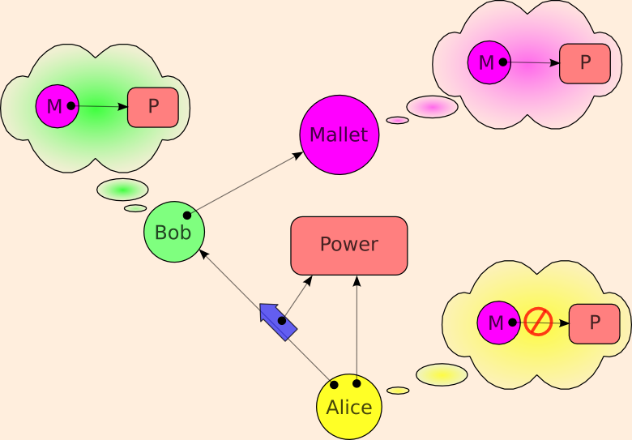
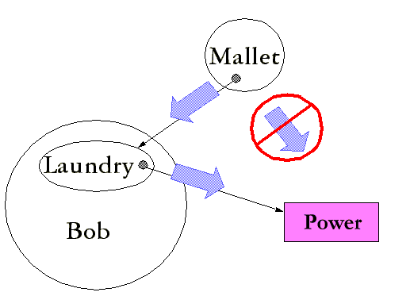

| |
Communicating |
||||||
(See Prohibiting Delegation for context)

Bob and Mallet are properly in communication, and Bob and Mallet both wish Mallet to have the power. They are Communicating Conspirators. Can Alice arrange to prevent Bob from giving Mallet the Power? The answer is simply no. Bob can circumvent any such attempt by creating a message laundry:

The reason the message laundry cannot be prevented is that it does not even admit of definition. The definition of what you're trying to prohibit is indistinguishable from the statement of the situation that is being allowed -- except for a change in terminology used to describe it. The allowed situation?
Bob may make use of the power in a way dependent on his own state over time. Bob may also communicate with Mallet, and may change his state as a result of such communication
The prohibited situation?
Although Bob and Mallet may share interests, and although they may be in communication, Bob should be prohibited from enabling Mallet to make use this power which has been granted to Bob.
I understand why lawyers would think this is a defenceable difference -- they get paid to litigate meaningless distinctions. But I'm boggled that more than a generation of computer science and engineering could have gone off the rails, and stayed off the rails, thinking this prohibition was desireable.
This unenforceable prohibition is the only case that ACLs can express but capabilities cannot. However, neither ACLs nor any force in the universe can prevent what is here prohibited, so this extra expressiveness only gives the users a false sense of security -- misleading them about what inabilities of the other players they may count on.
Other Statements of the Same Impossibility
The above observation was first made in 1981 by Jed Donnelley's "Managing Domains" paper:
To see the difficulty of restricting capability passing, we need only consider processes A, B, and S pictured in fig. 3. Suppose that A has a capability to a resource serviced by S. Also suppose that A can communicate with B (if not, then A cannot pass anything to B, so no special capability-passing restriction is necessary). If a monitoring OS kernel has denied the mechanism for passing direct access to a resource from A to B, A can still give B the right to indirect access. A can simply have B send all its service requests to A for forwarding to S. A will also have to return the results of such requests to B.
{kind=link}
There have been in depth discussions on the cap-talk list regarding the communicating conspirators problem.
{kind=link}
Rob Meijer's "Tainting Proxy Pattern" may solve a related problem, and bears examination.
Even though the SPKI standard adopted a do-not-delegate bit, section 4.1.1 of the SPKI rfc correctly explains why this bit is unenforceable:
The argument in favor of no control [of delegation] is that if a keyholder is given permission to do something but not the permission to delegate it, then it is possible for that keyholder to [...] set up a proxy service, signing challenges or requests for the intended delegate. [...]
(This explains the relationship of SPKI to capabilities.)
Likewise, Stefan Brands' deservedly famous thesis states:
In communications or transactions that are not face-to-face, remote lending cannot be prevented, regardless of whether privacy-protecting certificates or fully traceable identity certificates are used. Indeed, the ``lender'' might as well perform the entire showing protocol execution and simply relay the provided service or goods to the ``borrower.''
Where Capabilities Do Fall Short
In the crit-mail thread "Communicating Conspirators", rooted in here, Ralph Hartley establishes that other security architectures, including some possible ACL systems, can enforce a subtle prohibition, having to do with delegation in the Communicating Conspirators scenario, that capabilities can neither express nor enforce: for Alice to prohibit Bob from delegating the power to Mallet in such a way that Bob does not have the ability to revoke that delegation. To put it another way, while one cannot construct a security architecture in which Alice can prevent Bob from delegating to his communicating conspirator Mallet, under certain conditions, one can construct a security architecture in which Alice can prevent Bob from preventing Bob from preventing Mallet from continuing to use this power, even though Alice can't achieve this only with pure capabilities. The conditions?
Let's outline three hardware scenarios. In all scenarios, computers are assumed trustworthy as of the moment they are picked up, or delivered from, the store. (There's no justification for this assumption, except that no one could make any progress without this assumption. I hope you are as terrified as I of the implications of this.)
-
Cypherpunk Reference Scenario.
Anyone may tamper with any computer in their physical possession. We further assume that our homes make evidence of break-in evident, so we can stop trusting our computer following a possible physical tampering. Therefore, Alice trusts Alice's computer & Bob trusts Bob's computer, but Alice does not trust Bob's computer.
In this scenario, Ralph's observation holds, since the only machine trusted to hold Bob's secret key is one in Bob's physical possession. Bob's laundry-for-Mallet can only run on such a machine, and Bob is not able to prevent Bob from tampering with the machine in order to destroy the laundry.
-
Pervasive Opaque Box Scenario.
Opaque Boxes are defined here. Briefly, opaque boxes are boxes which destroy themselves (or equivalently, their memory) when they detect an attempt to violate the integrity of the box. The box contains CPU and memory and a secret key it never divulges. If disk is outside the box, pages must be encrypted/decrypted as they move between ram and disk.
Despite my earlier advocacy, as seen at the above link, I have come to share the sense of some other cryptographers that this solution is "totalitarian". See "Against Opaque Boxes", but note that (I believe) Jonathan is no longer on the other side of this question.
In any case, in this scenario, Ralph's observation holds as well, as the only box which Alice will take to represent Bob is a box not in Bob's physical control, even if it is in his physical possession. Such a box can be running an operating system that imposes anti-irrevocability rules on Bob, though it still cannot solve the Communicating Conspirators problem.
-
Cypherpunk With Opaque Box Availability.
This is the cypherpunk scenario modified by the availability of opaque boxes. Now, if Bob wishes to irrevocably delegate to Mallet, he can place his laundry-for-Mallet into an opaque box containing Bob's private key, and physically give this box to Mallet. The box will not divulge Bob's key to Mallet, but because Mallet has physical possession of the box, Bob cannot destroy it.
In this scenario, the price of irrevocable delegation is hardware, but we should assume that such hardware will shortly be dirt cheap. I claim that this scenario is the better idealization of the world we're about to find ourselves in. Within this scenario, the only expressiveness shortfall of capabilities vs theoretical possibility is the ability for Alice to impose this minor hardware cost on Bob. A pure cryptographic capability architecture (such as E) would spare Bob this hardware cost.
As an engineer I'm willing to give up on some theoretical possibilities if I feel their cost exceeds their value. Despite Ralph's demonstration of this subtle expressiveness gap of pure capabilities under certain conditions, E remains a pure capability architecture.
Unless stated otherwise, all text on this page which is either unattributed or by Mark S. Miller is hereby placed in the public domain.
| |
|
report bug (including invalid html)
|
||||||||